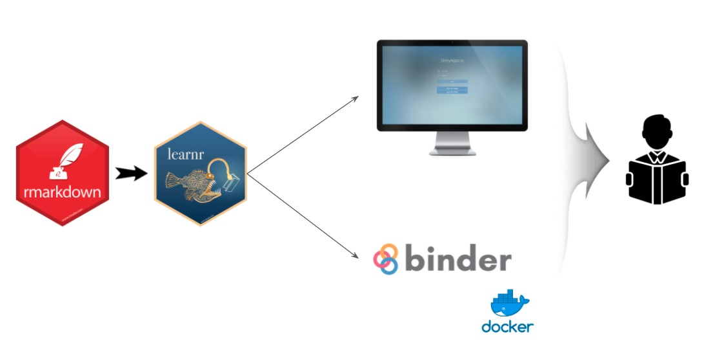
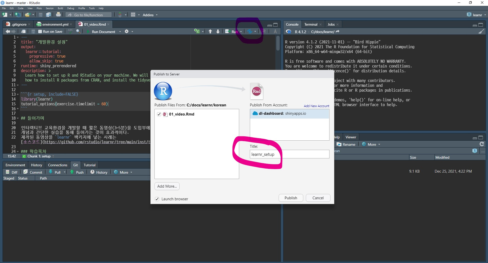
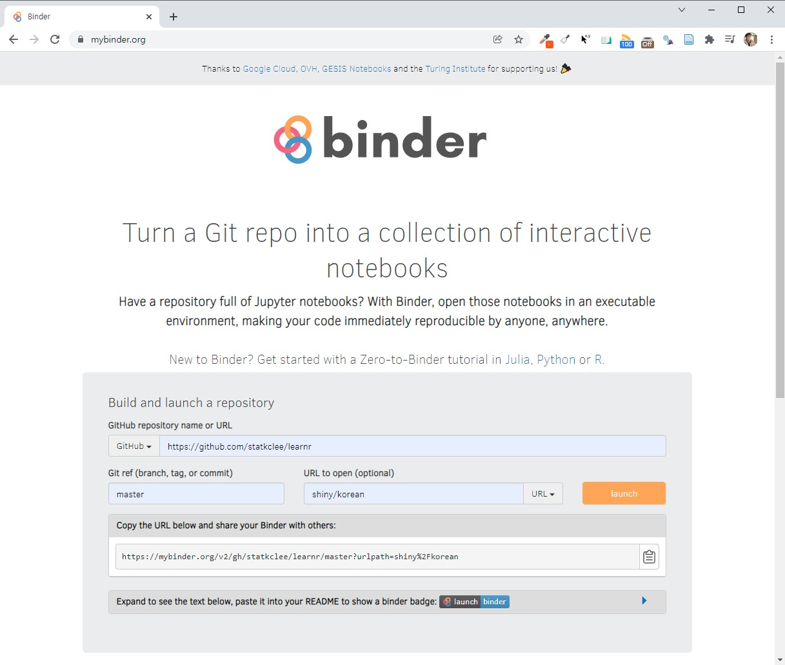
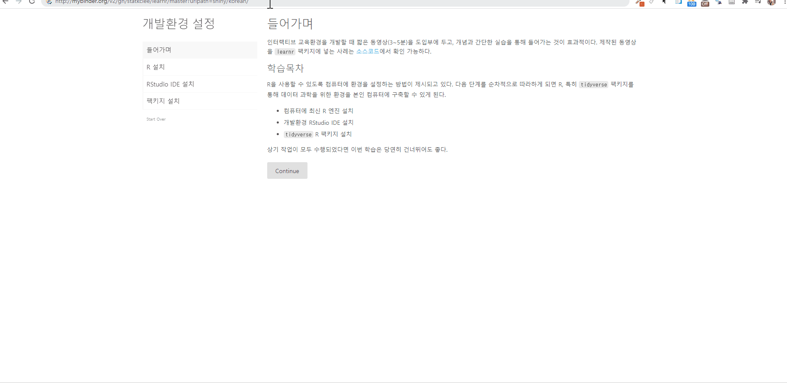

자기주도 학습 - learnr
learnr 패키지의 도움으로 진정한 자기주도 학습이 가능하게 되었습니다. 이제 데이터 과학을 직접 선생님을 통해 학습하는 방식에 새로운 변화의 바람이 불고 있습니다.
 # 자기주도학습 콘텐츠 저작
데이터 과학 자기주도학습 학습 콘텐츠 저작은 기본적으로 rmarkdown으로 데이터 과학 언어는 R, 문서는 마크다운으로 하여 저작한다. 이를 인터랙티브 학습 콘텐츠로 제작하는 방식은 learnr 팩키지를 사용해서 개발한다.
학습 콘텐츠 사례
먼저, 데이터 과학 환경설정 Set Up 사례를 참고해서 살펴보자. 소스코드를 다운로드 받아 이를 사례로 활용한다.
- R 설치
- RStudio 설치
tidyverse팩키지 설치
개발 환경
자기주소 학습 콘텐츠 저작을 위해서 가장 먼저 GitHub에 저장소를 생성한다. statkclee /learnr를 제작한 후 .Rmd 파일으로 learnr 팩키지 기능을 활용하여 사용해서 제작한다.
배포
shinyapps.io
가장 단순한 방법은 shinyapps.io를 통해 바로 배포하는 것이다. shinyapps.io 는 10~20명정도 적은 인원이 자기주도 학습을 할 경우 적합한 것으로 알려져 있다. - shinyaps 사례

mybinder.org
두번째 방식은 binder 서비스를 활용하는 것으로 도커 컨테이너를 처음 띄울 때 시간이 다소 소요되지는 이슈가 있지만 자기주도 학습을 원하는 분들이 많은 경우 원활한 서비스를 제공한다는 점에서 큰 장점이 있다. 방식은 Github 저장소를 binder 에 연결시켜 도커 이미지를 컨테이너를 만들어 두어 자기주도 학습 사용자가 붙을 때마다 이를 동일한 학습환경으로 띄워주는 개념이다.

데이터 과학 환경 학습
데이터 과학 환경을 구축하는 과정을 자기주도 학습을 통해서 배워가는 환경은 다음과 같이 구축된다. 실제 자기주도 학습 웹사이트 들어가서 직접 학습을 진행해도 좋다.
자기주도 학습을 R린이(=R+어린이) 시작하는 모습은 다음과 같다.
